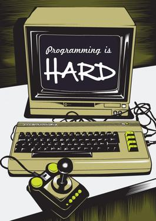

Here's What I've Learned So Far
Heather Payne is smart, hard-working, and not afraid to dive into things she doesn’t know. Starting from nothing more than a tweet six months ago, she and her colleagues have built an organization in Toronto called Ladies Learning Code that runs workshops to teach women basic programming skills. A couple of weeks ago, she set herself a goal: she wanted to build a simple little dynamic web site. Yesterday, she blogged this under the heading, “Here’s What I’ve Learned About Programming So Far“:

Respectfully, I disagree. Programming itself isn’t intrinsically hard; what’s hard is all the crap we make people like Heather wade through to get to the programming. I’ve been programming professionally for 29 years, and I’m still baffled, frustrated, and angered by things going wrong when I’m trying to set up a new workspace. Install this—oh, but wait, it depends on that, and the package manager I’m using doesn’t install the right version of that by default, but the error message telling me that only makes sense to five people on the entire planet, so off I go to a Q&A site where someone inevitably says, “It’s easy—you just…” Saints and small mercies, I hate that word—hate it and dread it. “Just” means “I want to make your problem sound trivial.” “Just” means “I refuse to acknowledge that we’ve buried your actual problem in so much accidental complexity that you’ll have to dig for hours to get to it.” Whether it’s a bureaucrat saying, “Why don’t you just fill in this 25-page form,” or a programmer saying, “Why don’t you just switch languages,” its real meaning is, “Your time means nothing to me.”
I’ve been teaching programming off and on for 24 years, and what I’ve learned reflects something psychologists discovered back in the 1970s. Suppose I give you a choice: you can either wait for the bus for 10 minutes every day, or you can wait 1 minute four days a week, and 20 minutes the fifth day, except you won’t know in advance which day each week is going to be the long wait. If you choose the second option, you’ll wait half as long on average, but almost everyone prefers the first because it’s more predictable. Similarly, if you can choose between a task that will reliably take an hour, or one that will usually take five minutes, but will occasionally take a full day, you’ll choose the former—you pretty much have to if you want to be able to plan anything else.
And that is where we, as programmers, have failed. When Heather and people like her sit down to start programming, they have no way of knowing whether a seemingly-simple task is going to take 5 minutes or 5 hours, because we, the professionals, don’t know either. Oh, we’re probably better at guessing, but we don’t know. And yes, other things aren’t really predictable either—painting a wall can take half a day instead of 30 minutes if you accidentally knock the can over and have to clean it up—but programming has much bigger error bars than anything else I do.
So here’s what I’ve learned so far from almost thirty years of programming and teaching. If we really want it to be something that most people can do, the way most people can do their taxes or change the oil in their car, then we have to make it more predictable. We have to stop excusing ourselves with the J-word; we have to stop saying, “Oh, but of course the debugger won’t work if you’re running a Tkinter application, because the Tk app grabs the event loop,” which is about as fair as saying, “Oh, but of course it rains when you wear red on Tuesdays” (the “…you idiot” at the end of that sentence may be silent, but it’s always there). We don’t need to simplify programming itself: we need to throw away all the crap that’s piled up on top of it. A “simplified for novices” layer on top of the crap won’t work: all abstractions leak, and the interface between the simplification layer and what’s underneath it will be a breeding ground for more incomprehensible bugs.
If we have made programming difficult for someone like Heather, then we should be ashamed of how poorly we have done our jobs. I don’t know what the solution is, or if we can get from here to there, but as far as I’m concerned, it’s the biggest challenge computer literacy projects of all kinds face.